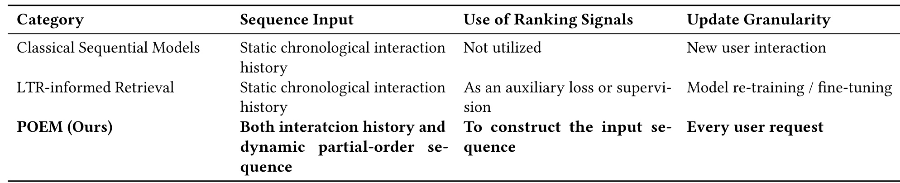
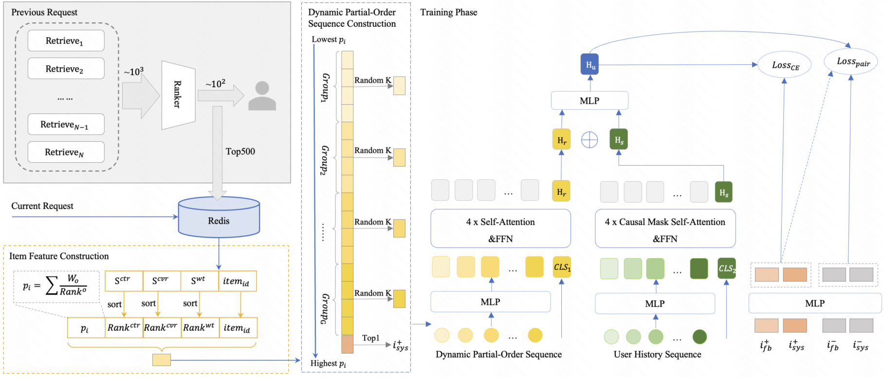
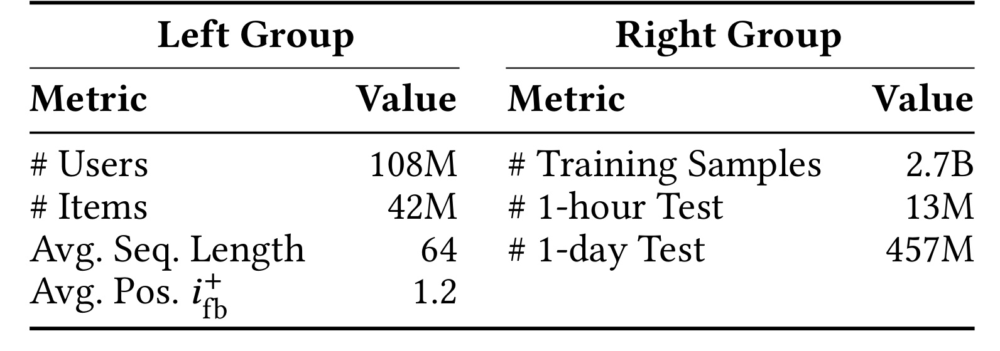
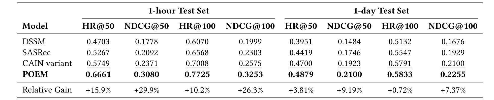
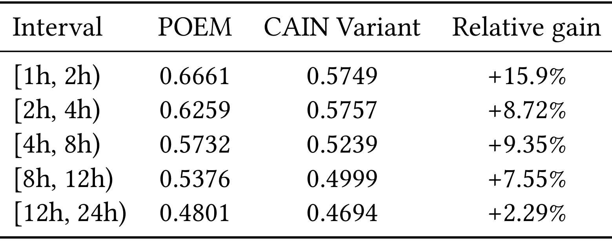
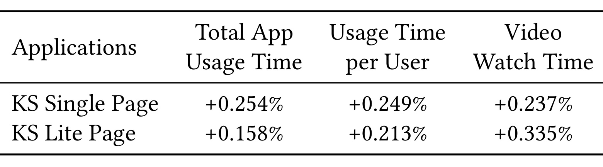
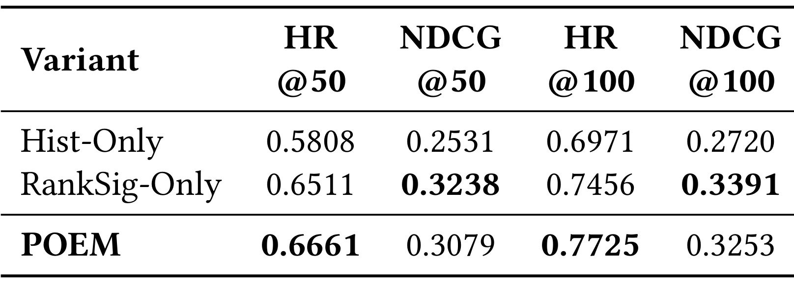
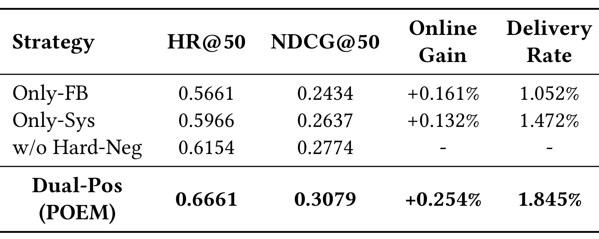
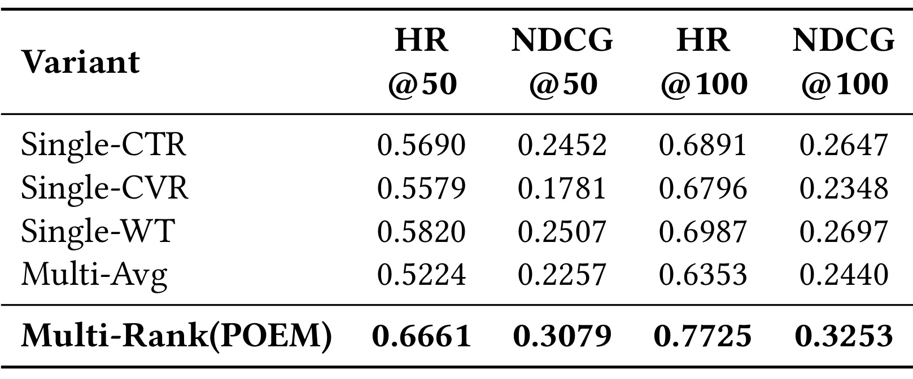
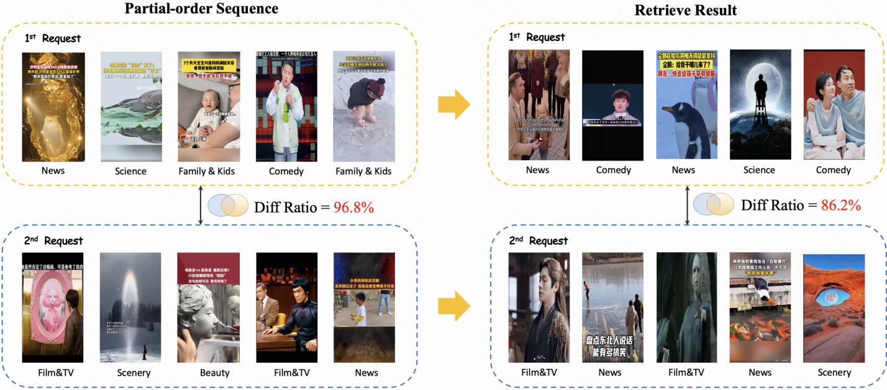

POEM：用部分序增强实时序列推荐建模
POEM 讨论的是工业推荐里一个很具体但长期存在的断点：召回侧的序列模型通常只看用户已经发生的历史点击，而平台的排序链路其实每一刷都在产生更细粒度、更实时的多目标判断。论文来自快手技术团队，作者包括 Linxiao Che、Yijia Sun、Siyuan Lou、Shanshan Huang、Qiang Luo、Ruiming Tang、Han Li 和 Kun Gai。论文入口为 arXiv:2606.29946。截至事实包核验，arXiv 页面和论文首页未看到公开代码仓库；论文 DOI 位置仍是 ACM 模板占位。
这篇论文的中心贡献不是再给 SASRec 类序列模型加一个注意力模块，而是把上一刷推荐请求中的 ranking cascade 输出拿来重新定义召回模型的输入序列。作者把 CTR、CVR、观看时长等多目标排序分变成一个动态 partial-order sequence，再与用户历史序列一起编码，让召回表征在每次请求时都能依据系统最新判断刷新。
实时推荐面对快速变化的用户兴趣和上下文环境，传统序列模型依赖静态历史点击序列，既难以及时捕捉偏好漂移，也忽略了推荐系统内部 ranking logic 中已经存在的结构化偏好信息。POEM 要解决的就是把这些上一阶段实时排序信号转化为可训练、可服务的序列结构。
1. 背景和问题
工业推荐系统的多阶段链路里，召回、粗排、精排和重排通常各自承担不同的规模与延迟约束。传统序列召回模型把用户最近点击、播放或交互过的 item 按时间顺序输入 Transformer 或 RNN，让模型从过去行为里预测下一次可能喜欢什么。这个建模方式能捕捉稳定偏好，也容易与大规模 ANN 检索结合，但它有一个明显前提：只有当用户产生新的可观测行为时，序列才真正更新。对于短视频流、信息流和电商 feed，这个前提并不总成立。用户在一刷里看到的候选、停留、未点击、快速划走，以及系统根据上下文算出的多目标排序分，都会影响下一刷的偏好判断；可是如果召回模型只等点击历史更新，它就会落后于系统内部已经发生的判断变化。
POEM 的动机来自这个系统内外的信息差。论文指出，推荐系统并不是一个被动观察者，而是一个持续生成偏好估计的主动参与者。排序阶段会为成千上万个候选实时产生 CTR、CVR、watch time 等信号，这些信号不是最终曝光结果本身，却反映了系统在当前上下文下对用户可能偏好的排序关系。传统序列模型忽略这些关系，等于把 ranking cascade 的实时智能浪费掉；一些 LTR-informed retrieval 或蒸馏路线虽然会让召回模型学习 ranker 的监督信号，但通常仍把 ranking signal 当作 loss、teacher 或 reweighting，而不是直接用来构造输入序列。POEM 则更进一步：把上一刷候选的排序偏序结构变成召回侧序列的一部分。

Table 1 很好地压缩了论文的问题边界。Classical Sequential Models 的输入是静态 chronological interaction history，不使用 ranking signals，更新粒度是新用户交互；LTR-informed Retrieval 仍主要使用静态历史序列，只把排序信号作为辅助 loss 或监督，更新通常发生在模型重新训练或 fine-tuning 时；POEM 的输入同时包含 interaction history 和 dynamic partial-order sequence，并把 ranking signals 用于构造 input sequence，更新粒度达到 every user request。这里最关键的是第三列和第四列的组合：POEM 不是简单把 ranker 分数作为标签，而是让排序阶段的实时偏好层级直接决定召回表征在本次请求中的视角。这解释了论文为什么把 contribution 放在 sequence construction paradigm 上，而不是只强调新的 loss。
从推荐系统工程角度看，这个问题有两个层次。第一层是信息利用：排序阶段已经对候选做了多目标评估，召回阶段如果完全不看这些评估，就会在下一次请求里重复使用陈旧的历史兴趣表示，导致召回候选与下游排序偏好错位。第二层是时间因果：当前请求的排序结果不能被当前请求的召回使用，否则会引入未来信息；但上一刷请求的 top-ranked candidates 和它们的排序分已经在缓存里，是合法的、低延迟可用的实时状态。POEM 把可用信息限定在上一刷，既避免泄漏，又比“等用户下一次点击”更快。
论文提出的两个主要限制也由此清晰起来。其一是 underutilization of system intelligence，也就是 ranking cascade 内部已经有细粒度偏好分辨力，却没有被召回序列结构吸收。其二是 real-time modeling latency，也就是模型视图依赖新点击，用户兴趣可能在没有点击的情况下因为上下文和候选池变化而改变，模型却仍停留在旧序列上。POEM 的价值就在于把“上一刷系统认为用户可能喜欢什么”纳入“当前请求召回模型如何理解用户”的输入，而不是把用户表征完全交给更慢的行为日志更新。
需要注意，POEM 不是说点击历史不重要。论文后续消融会显示，仅用 ranking signal 的 RankSig-Only 已经很强，但完整 POEM 在 HR@50 和 HR@100 上更好。这说明历史序列仍然提供用户长期偏好和相对稳定的语义锚点，ranking signal 更像是把模型拉向当前候选池与当前系统判断的实时偏置。二者的分工类似：历史序列回答“这个用户长期喜欢什么”，部分序序列回答“上一刷的系统综合判断认为哪些内容更应被靠前考虑”，融合后才适合服务当前请求的召回。
2. 方法
2.1 从上一刷 ranking 结果构造动态部分序序列
POEM 的方法从一个受限但实用的数据源开始：同一用户上一刷请求中进入 ranking 阶段的 top-ranked candidate items 及其多目标排序分。设上一刷候选集合为 C = {i_1, i_2, ..., i_N}，每个候选有来自 preceding ranking stage 的多个实时分数，例如 CTR、CVR 和 watch time。作者没有直接平均原始分数，因为不同目标的量纲和分布可能不一致；他们先在每个目标内部把 item 按原始分数降序排序，再把 rank 变成逆排名效用。
符号解释：o 表示目标类型，例如 ctr、cvr 或 wt；rank_o(i) 是 item i 在目标 o 下的排名，排名 1 表示该目标下最高；s_o(i) 是对应目标的逆排名效用。这个定义的直觉是把不同目标都放到同一种“越靠前越大”的相对位置尺度上，避免 CTR 概率、观看时长预估值和其他目标因为数值范围不同而互相压制。
得到每个目标的逆排名效用后，POEM 用加权和得到最终 fused score。这个步骤决定了候选进入哪个 partial-order group，因此它不是普通特征拼接，而是后续排序、分组与采样的共同依据。如果这里融合不稳，后面的随机组内采样只会把噪声扩散到整条 S_r。论文写成：
符号解释：p_i 是 item i 的多目标融合优先级；w_o 是目标 o 的权重；s_o(i) 是上一个公式得到的逆排名效用。这个 p_i 是后续部分序构造的核心变量：它既继承了排序阶段的多目标判断，又通过 rank-based 方式降低了原始分数尺度不一致的影响。论文里说 candidate set size 固定，因此 inverse-rank utility 在不同目标上具有相同数值范围，不需要额外归一化。
有了 p_i 之后，POEM 对候选列表排序，再把排序后的列表切成 G 个连续组，每组大小近似相同，并从每组无放回随机采 K 个 item。论文实现里 G = 8，K = 8，因此动态 partial-order sequence 的长度为 64。这个设计不是简单 top-K 截断：组间仍保留从高优先级到低优先级的全局顺序，组内则通过随机采样保留多样性。换句话说，POEM 没有强行假设 rank 1 一定严格好于 rank 2 的每个微小差异，而是承认 ranking score 提供的是粗粒度偏序；模型看到的是“高分组先于低分组”的结构，而不是一个完全确定的全序。
2.2 五元组特征、双 Transformer 与用户表征融合
动态序列里的每个 item 不是只用 ID 表示。因为 POEM 关心的不是“这个 item 是谁”这一维信息，而是它在上一刷多目标排序中的相对位置，所以论文把 item i 写成包含三个目标排名、融合分和 ID 的五元组。这样模型能区分“同一个内容因 CTR 靠前”和“因观看时长靠前”这两种不同系统判断：
符号解释：rank_{ctr}(i)、rank_{cvr}(i)、rank_{wt}(i) 分别是 item i 在 CTR、CVR、watch time 目标下的排名；p_i 是多目标融合优先级；ID(i) 是 item 的唯一标识。这个五元组的意义在于保留“为什么这个 item 在上一刷里被系统看重”的结构信息：同样排在前面的两个 item，可能一个靠 CTR、一个靠 watch time；只看最终 p_i 会丢掉这种目标来源差异。
五元组进入模型前会被投影成稠密向量。这里连续 ranking 特征与离散 item ID 分开处理，可以避免把目标排名当作普通类别 ID，同时保留 item 本身的语义表征。对召回模型来说，这一步相当于把 ranker 的相对偏好和 item embedding 放在同一表示空间中。论文给出的表达是：
符号解释：e_i 是 item i 在动态部分序序列中的输入 embedding；W_{feat} 是把四个连续排序特征投影到 d 维空间的可学习矩阵；E_{embed}(ID(i)) 是 item ID 的 embedding；加法表示连续排序特征与离散 item 语义共同进入后续 encoder。这个公式体现了 POEM 对 ranking signal 的使用方式：它不只在训练目标里告诉模型“哪个 item 更好”，还在输入侧告诉模型“这个 item 在不同目标下的位置是什么”。
POEM 同时保留用户历史交互序列 S_h。S_h 表示用户最近行为，包含 item ID、内容标签和其他辅助特征，主要承载长期或较稳定偏好；S_r 表示上一刷 ranking signal 构造出的部分序序列，主要承载 request-level 的当前系统判断。两条序列分别进入两个独立 Transformer encoder。每个 encoder 在输入末尾追加特殊 token，用于聚合序列级表示，得到 h_h 和 h_r。最终用户向量写为：
符号解释：h_u 是当前请求用于召回的用户表征；h_h 是历史交互序列的聚合表示；h_r 是动态部分序序列的聚合表示；[h_h;h_r] 表示向量拼接；MLP 用两层线性层和非线性激活融合二者。这个融合结构的好处是边界清楚：历史兴趣和 ranking-informed 实时兴趣不共享 encoder 参数，模型可以分别学习两种序列的统计规律，再在上层组合。
2.3 层级正样本、动态图 hard negative 与混合损失
POEM 的训练目标与输入构造一致，也同时考虑用户真实反馈和系统偏好。论文定义两类正样本：User-Feedback Positive i_fb^+，即在候选集合 C 中实际曝光并获得正反馈的 item；System-Preferred Positive i_sys^+，即候选集合中 p_i 最高的 item。前者代表真实用户满意，但稀疏且受曝光策略影响；后者代表 ranking stage 当前最看好的 item，能够把复杂 ranker 的多目标判断蒸馏给召回模型。最终正样本集合是 P = {i_sys^+, i_fb^+}。
负样本也不是简单 in-batch random negatives。论文使用离线构建的 Swing item-item 相似图 G，对每个正样本 i^+ 检索 top-M 相似邻居 N(i^+,M)，再在这些邻居中选择 hard negative。策略上有一个混合：以概率 rho 选择邻居中第三低相似度的 item 作为 i_hard^-，否则从 N(i^+,M) 随机采样。这个细节看起来有些经验化，但动机合理：如果负样本太容易，pairwise loss 学不到细粒度边界；如果负样本过近，又可能变成未观测正样本或噪声。第三低相似度加随机化，是在 hardness 和 diversity 之间取折中。
总损失由 cross-entropy 和 pairwise margin 两部分组成。前者负责让用户表征靠近正样本、远离批内负样本，后者专门处理图检索得到的 hard negative，使模型学习更细的相似内容边界。二者合起来，既维持大规模召回训练效率，又补上短视频相似内容过多时的判别能力：
符号解释：L 是总训练目标；L_{CE} 使用批内负样本学习用户表征与正样本的匹配；L_{pair} 要求正样本相似度高于 hard negative；lambda 控制二者权重。论文实现里 lambda = 0.1，margin gamma = 0.2。
交叉熵项沿用大规模召回常见的批内对比学习形式。它把当前 batch 中其他 item 当作负样本，并用 temperature 控制 softmax 分布尖锐程度，因此适合在大 batch 工业训练中稳定优化。论文还提到采样偏差校正，用来缓解热门内容和曝光策略对训练样本的影响：
符号解释：B 是 batch size；h_u^b 是第 b 个样本的用户表征；e_{i_b^+} 是该样本正 item 的 embedding；N_b 是批内负样本集合；sim 表示 cosine similarity；tau 是 temperature。这个项把 retrieval 训练成常见的对比学习形式，并且论文还加入 sampling-bias correction 来缓解流行度偏差。
pairwise 项只在正样本与 hard negative 的相似度差距不足时产生梯度。它不是替代交叉熵，而是补上随机负样本过容易的问题，让 Swing 图中相似但不应被当前用户优先召回的 item 被显式推开。这个目标与上一节的系统偏好正样本配套，服务的是更细的 cascade 对齐：
符号解释：i_{hard,b}^- 是第 b 个样本对应的 hard negative；gamma 是 margin；如果 hard negative 与用户表征的相似度已经比正样本低至少 gamma，该项为 0，否则产生惩罚。这个公式与动态图负样本相配合，把“相似但不该被当前用户优先召回”的 item 推开。对短视频推荐来说，这种边界很重要，因为候选内容语义相近、消费反馈又高度上下文相关。

Figure 1 把上面的设计串成完整工作流。左侧是 sequence construction：上一刷请求经过多个 retriever 后进入 ranker，ranker 产生 top-ranked candidates，这些结果连同多目标分数写入 Redis；当前请求读取上一刷缓存，用 Item Feature Construction 计算 p_i，并按分组采样生成 dynamic partial-order sequence。中间竖条表示组间部分序：从低 p_i 到高 p_i 的层级被保留，组内用 Random K 维持多样性。右侧是 training phase：动态部分序序列与用户历史序列分别进入 self-attention 编码器，两个 CLS token 输出合并为 H_u，再同时服务 L_CE 和 L_pair。图中两个正样本分支 i_fb^+ 与 i_sys^+ 也说明 POEM 并不只追随用户点击，系统偏好同样进入训练目标。
2.4 线上服务闭环与时间因果约束
POEM 的服务流程强调 temporal causality。当前请求进入时，系统读取两个输入：用户历史交互序列 S_h，以及该用户上一刷 top-ranked items 和它们的多目标 ranking scores。模型用上一节的构造方式生成 S_r，再和 S_h 一起编码得到 h_u。h_u 作为 query 进入 ANN index，召回候选集合。与此同时，当前请求召回出的候选会继续进入 downstream ranking stages；这些 stages 产生的 top-ranked items 和分数被缓存下来，供同一用户下一次 refresh request 使用。这样形成一个闭环：上一刷 ranking signal 帮助当前刷召回，当前刷 ranking signal 又为下一刷提供实时输入。
这个闭环的工程价值在于它把实时性限制在“一刷延迟”内，而不是等待用户新点击或离线训练刷新。它也解释了为什么 POEM 更适合短视频流这种高频刷新场景：用户每次刷新的候选池和上下文都可能变化，上一刷 ranker 的多目标判断通常比几分钟前或几小时前的点击历史更接近当前状态。POEM 的核心机制可以概括为：用 ranking cascade 的上一刷偏序来重写召回序列输入，使召回模型在不破坏时间因果的前提下具备 request-level 实时感知。
当然，这个机制也带来边界条件。第一，上一刷排序结果必须可靠缓存，且能够在毫秒级读取；如果 Redis 或等价缓存链路丢失，S_r 就退化。第二，ranking score 本身必须稳定可比，如果目标权重或 ranker 版本频繁变化，p_i 的含义会漂移。第三，上一刷与当前刷之间的时间间隔越长，上一刷 partial-order 越可能过期；论文的 temporal analysis 正是验证这一点。第四，使用 system-preferred positive 会让召回更贴近下游排序目标，但也可能放大 ranker 既有偏置，因此需要用户反馈正样本和 hard negative 一起约束。
3. 实验结果
3.1 数据集、baseline 与主离线结果
论文实验使用快手生产日志构建大规模工业数据集。每个训练或测试 instance 对应一个用户请求，候选集合约 1000 个 item，来自该用户上一刷请求的 top-ranked results，并用这些 item 上的真实用户反馈，例如点击或长播，作为 label。数据按时间切分：前五天训练，第六天的第一个小时作为 1-hour test，以贴近实时推荐特性；同时还提供 1-day test 观察更长时间跨度下的泛化。Baseline 包括 DSSM、SASRec 和 CAIN variant，其中 CAIN variant 保留 TCN-based user encoder 作为较强上下文序列基线。

Table 3 显示数据规模足够工业化：108M 用户、42M items、2.7B training samples，1-hour test 有 13M 样本，1-day test 有 457M 样本，平均序列长度为 64，平均 user-feedback positive 为 1.2。这个规模很重要，因为 POEM 的主张依赖 ranking cascade、候选池和实时缓存；如果只在小型公开序列推荐集上验证，无法说明上一刷 ranking signal 是否真的能在生产链路中稳定发挥作用。平均正反馈数 1.2 也解释了为什么只依赖用户反馈正样本会稀疏：每个请求中的强反馈很少，而系统排序分提供了更密集的相对偏好结构。因此这张表也提醒我们，POEM 的评价单位是请求级生产日志，而不是用户级离线小样本；正反馈稀疏与候选规模共同放大了 ranking signal 的训练价值。

Table 2 是主结果。1-hour test 上，POEM 的 HR@50 为 0.6661，NDCG@50 为 0.3080，HR@100 为 0.7725，NDCG@100 为 0.3253；相比第二好的 CAIN variant，四个指标的相对增益分别是 15.9%、29.9%、10.2% 和 26.3%。1-day test 上，POEM 仍然最好，但提升收窄：HR@50 为 0.4879，NDCG@50 为 0.2100，HR@100 为 0.5833，NDCG@100 为 0.2255；相对第二好分别提升 3.81%、9.19%、0.72% 和 7.37%。这个结果符合方法假设：POEM 的优势来自上一刷 ranking signal 的 freshness，越贴近训练 cutoff 和当前系统状态，partial-order sequence 越有信息；时间跨度拉长后，ranking policy、候选池和用户分布都会漂移，增益自然下降。
3.2 时间敏感性与线上 A/B
为了进一步拆解 freshness，论文按距离训练 cutoff 的时间间隔划分测试请求，只比较 POEM 和最强 sequential baseline CAIN variant 的 HR@50。

Table 4 的趋势很直观：[1h, 2h) 桶里 POEM 为 0.6661，CAIN Variant 为 0.5749，相对增益 15.9%；到 [12h, 24h) 时，POEM 为 0.4801，CAIN 为 0.4694，相对增益只剩 2.29%。中间 [2h,4h) 和 [4h,8h) 有小幅波动，但整体方向是时间间隔越长，增益越弱。这个表不是简单重复 Table 2，而是把 POEM 的适用前提说得更具体：它最擅长在 ranking signal 仍新鲜的窗口里做 request-level adaptation。如果线上请求间隔短、候选池变化快，它能比静态历史序列更快反应；如果缓存信号已经跨越较长时间，partial-order 可能就只是旧 ranker 状态的残影。
线上 A/B 部分更接近论文的工业价值。作者把 POEM 部署到短视频平台线上推荐服务，处理组 5% 流量使用 POEM，对照组 5% 流量使用生产模型 Kuaiformer，实验持续 7 天。

Table 5 报告了两个场景。KS Single Page 的 Total App Usage Time 提升 0.254%，Usage Time per User 提升 0.249%，Video Watch Time 提升 0.237%；KS Lite Page 的对应提升为 0.158%、0.213% 和 0.335%。论文称这些提升均具有统计显著性。对成熟大规模推荐平台而言，0.2% 量级的时长指标通常已经是有意义的线上收益，尤其当方法改动位于召回侧时，它需要通过后续排序、混排和消费反馈层层传导才会体现在用户级业务指标上。这里也要保持克制：论文没有给出置信区间、实验地域或更细的护栏指标，因此我们能确认的是作者报告了正向 A/B 结果，不能进一步推断所有业务场景都会等价复现。
3.3 序列组成、训练目标与信号融合消融
消融实验先看输入序列组成。论文比较 Hist-Only、RankSig-Only 和完整 POEM。Hist-Only 只用传统历史交互序列，RankSig-Only 只用由上一刷 fused ranking score 构造的 S_r，POEM 则融合二者。

Table 6 里 Hist-Only 的 HR@50 为 0.5808，NDCG@50 为 0.2531；RankSig-Only 提升到 HR@50 0.6511、NDCG@50 0.3238；完整 POEM 的 HR@50 为 0.6661，HR@100 为 0.7725，是命中率最好的方案，但 NDCG@50 为 0.3079，低于 RankSig-Only 的 0.3238。这个细节值得注意：RankSig-Only 更像下游 ranker 的即时偏好复制，因此在靠前排序质量上可能更强；完整 POEM 融合历史序列后，可能引入更宽的用户长期偏好，导致 NDCG@50 稍低但 HR 更好。对召回侧来说，这个 trade-off 未必是坏事，因为召回更关心把足够好的候选带入后续排序，而不是完全模仿 ranker 的 top positions。
第二组消融验证层级学习目标，包括 Only-FB、Only-Sys、w/o Hard-Neg 和 Dual-Pos(POEM)。

Table 7 显示 Only-FB 的 HR@50 为 0.5661，NDCG@50 为 0.2434，Online Gain 为 +0.161%，Delivery Rate 为 1.052%；Only-Sys 的 HR@50 为 0.5966，NDCG@50 为 0.2637，Online Gain 为 +0.132%，Delivery Rate 升至 1.472%；去掉 hard negative 后 HR@50 为 0.6154，NDCG@50 为 0.2774；完整 Dual-Pos 的 HR@50 为 0.6661，NDCG@50 为 0.3079，Online Gain 为 +0.254%，Delivery Rate 为 1.845%。这里可以读出两点：只用用户反馈会受曝光偏差和稀疏性限制，只用系统偏好会提高 cascade awareness 和 delivery efficiency，但线上收益未必最大；同时，hard negative 对离线指标有明显贡献，说明 POEM 的难点不是找到任何正样本，而是在语义相近、候选拥挤的短视频空间里学到细粒度边界。
第三组消融看多目标融合。论文比较 Single-CTR、Single-CVR、Single-WT、Multi-Avg 和 Multi-Rank(POEM)。

Table 8 里 Multi-Rank(POEM) 的 HR@50 为 0.6661，NDCG@50 为 0.3079，HR@100 为 0.7725，NDCG@100 为 0.3253，显著优于单目标和简单平均。尤其 Multi-Avg 的 HR@50 只有 0.5224，甚至低于 Single-CTR 和 Single-WT，说明把不同目标原始分数直接平均会引入严重尺度错配或目标重要性错配。POEM 用 rank-weight 而不是 raw-score average，是这篇论文方法中很务实的一点：它未必捕捉了所有 ranker 校准信息，但更稳地保留了不同目标下的相对顺序，使 p_i 可用于分组和采样。这也解释了前文公式为何先转逆排名再加权：如果直接对原始分做算术平均，强目标或尺度大的目标会遮蔽其他业务目标。
3.4 案例研究与证据边界
论文最后用 case study 观察连续两次刷新。场景中没有新的用户点击，但候选池和排序分发生变化，POEM 构造的 partial-order sequence 也随之变化。

Figure 2 左侧展示 partial-order sequence：两次请求之间的 sequence diff ratio 达到 96.8%；右侧展示最终 retrieval result：diff ratio 达到 86.2%。图中内容类别从第一刷的 News、Science、Family & Kids、Comedy 等组合，转向第二刷中更多 Film & TV、Scenery、Beauty 等结果。论文把这个现象解释为 POEM 的 S_r 能在 passive period 中“steer” 用户 embedding，即使没有新点击，也能因上一刷 ranking scores 和候选池变化而调整召回。这个案例不能单独证明泛化能力，但它补充了表格指标难以表达的行为：POEM 的实时性不仅体现在 HR/NDCG，也体现在相邻请求之间输入序列和输出候选确实会随系统最新判断发生大幅变化。
整体实验链条比较完整：Table 2 证明主效果，Table 4 证明效果与时间新鲜度相关，Table 5 给出线上业务指标，Table 6-8 拆解输入、目标和融合机制，Figure 2 展示 case。它的不足也很明确。论文使用私有工业数据，外部复现实验很难；线上 A/B 只报告核心业务提升，没有展示护栏指标、长期留存或多样性详细分布；ranking signal 本身来自生产 ranker，因此方法收益可能依赖 ranker 质量、目标权重和缓存稳定性。换句话说，POEM 证明了一条有工业价值的设计路线，但它不是一个脱离系统上下文即可复用的通用序列推荐算法。
4. 总结
4.1 我的判断
我认为 POEM 最值得关注的地方，是它把“推荐系统内部实时产生的偏好判断”从训练监督提升为输入结构。很多 retrieval-ranker alignment 工作会把 ranker 作为 teacher、loss 或 reweighting 来源，但输入序列仍然是用户历史行为。POEM 反过来问：如果 ranker 在上一刷已经形成了一个多目标偏好排序，为什么不把这个排序本身变成召回模型当前请求的上下文？这让召回模型不再只等待用户显式反馈，而能利用系统在候选层面已经形成的细粒度判断。
工程上，这个思路适合高频刷新、候选池快速变化、ranking stage 信号足够成熟的平台。短视频 feed 是很典型的场景：用户兴趣变化快，单次点击或长播反馈稀疏，系统每刷都要在大量候选中做多目标取舍。POEM 用上一刷缓存作为实时输入，既绕开当前请求未来信息，又把召回侧与排序侧目标连接起来。它不像纯 ranker distillation 那样需要等离线训练完全吸收 teacher，也不像只加上下文特征那样把 ranking signal 当附属变量，而是改变了序列构造本身。
4.2 工程启发与复现关注点
如果要在类似系统里复现 POEM，我会优先检查四件事。第一，上一刷 ranking outputs 是否可稳定缓存，并且能按用户、请求和时间戳追溯，避免取错 session 或跨请求污染。第二，多目标分数是否适合 rank-based fusion；如果目标的业务含义或权重经常变动，p_i 应该带版本号或按策略层隔离。第三，S_r 与 S_h 的融合是否会导致过度跟随 ranker；Table 6 暗示 RankSig-Only 对 NDCG 有优势，但完整 POEM 更适合命中覆盖，因此线上目标不同可能需要调整融合权重或结构。第四，hard negative 的 Swing 图质量和更新频率会影响 pairwise loss；如果 item graph 太旧或过度热门化，hard negative 可能变成噪声。
4.3 局限与后续跟进
这篇论文至少有四个局限。第一，数据和系统均为快手内部生产环境，外部无法直接复现 Table 2-8 的完整结果。第二，线上 A/B 只给出核心时长指标，没有展开护栏、内容生态、多样性长期趋势或不同用户分层。第三，方法依赖上一刷 ranking signal，如果 ranker 目标存在偏置，召回侧可能进一步放大这种偏置；虽然用户反馈正样本能缓解，但论文没有专门做公平性或偏置评估。第四，部分序构造使用 G=8、K=8 等固定超参，论文没有充分展示这些超参对延迟、准确率和多样性的敏感性。
后续我会关注三条线索。第一，能否把 partial-order sequence 从上一刷扩展到多刷短期窗口，同时用时间衰减避免旧 ranking signal 污染当前表征。第二，能否把目标权重 w_o 变成用户态或场景态自适应，而不是固定融合不同业务目标。第三，能否在召回层显式加入探索约束，防止 POEM 过度追随下游 ranker 的 exploitation 倾向。对于工业系统来说，POEM 的强项是把已有 ranking intelligence 变成实时召回输入；真正上线时，还需要把缓存一致性、策略版本、目标漂移和内容生态风险一起纳入监控。